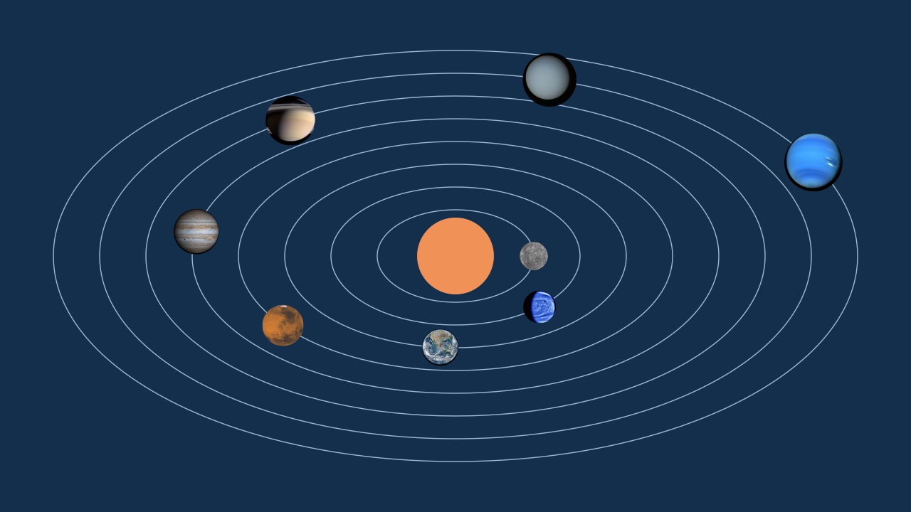
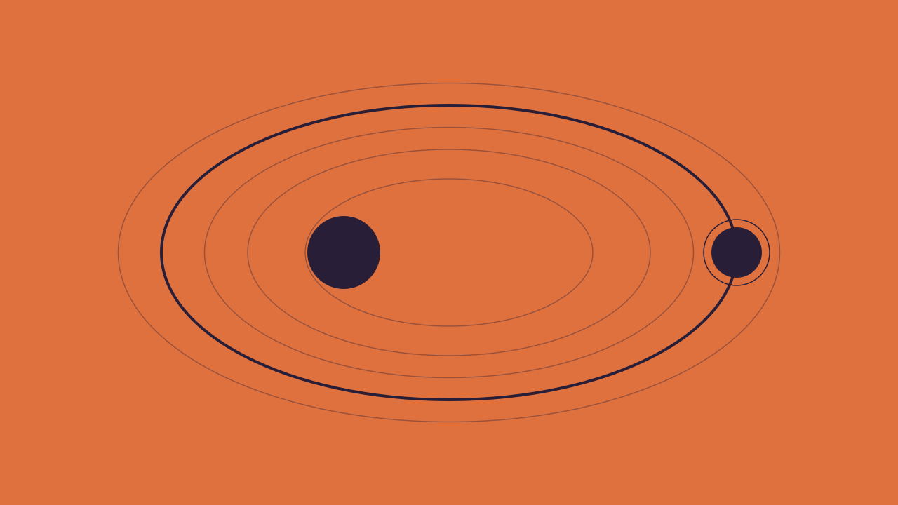
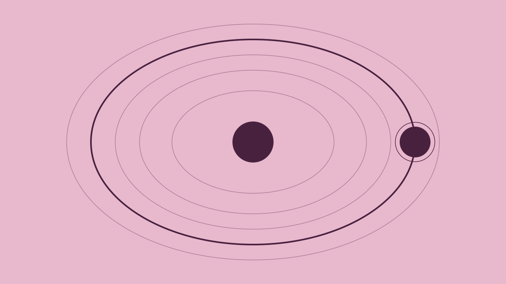
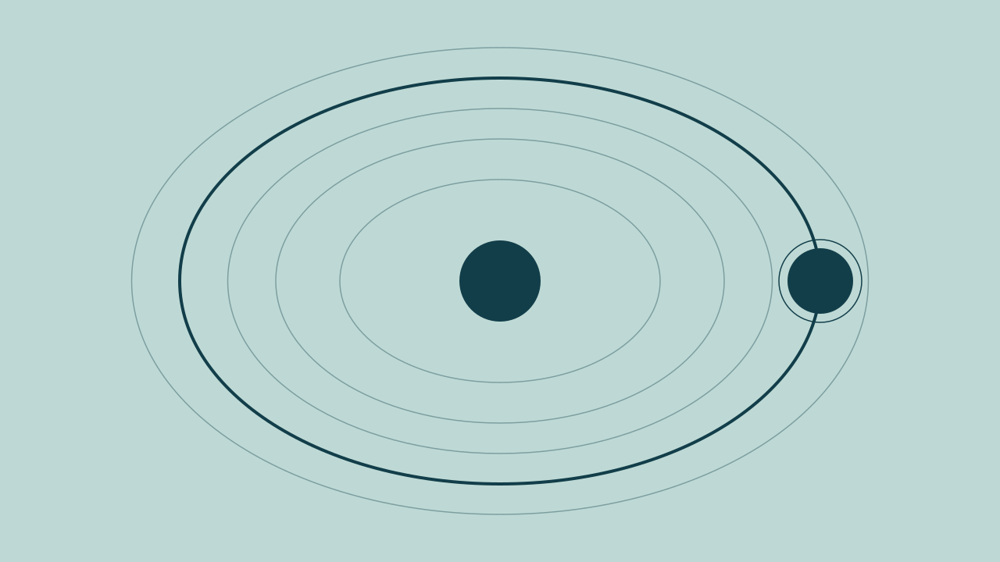
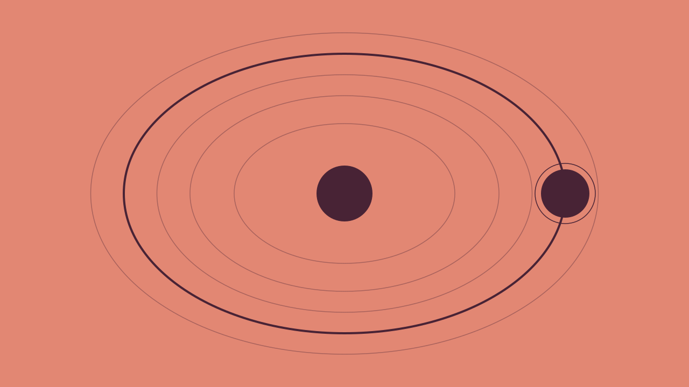
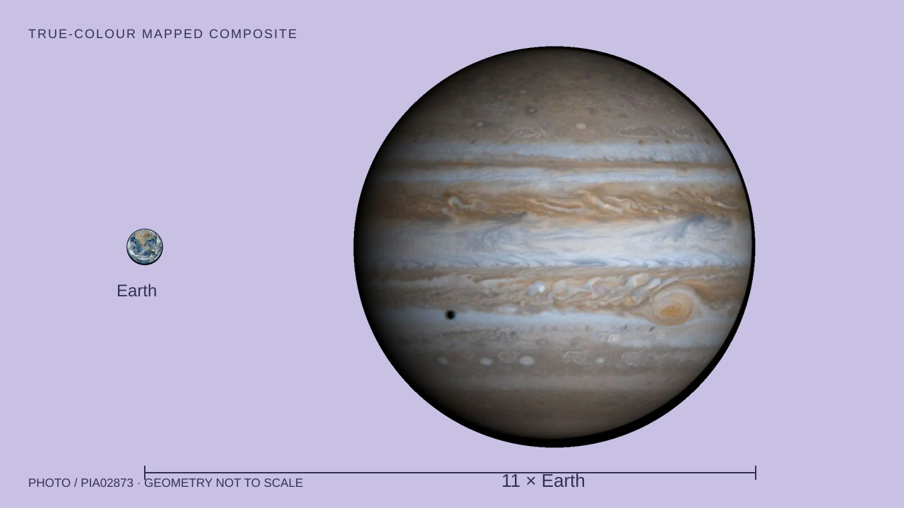
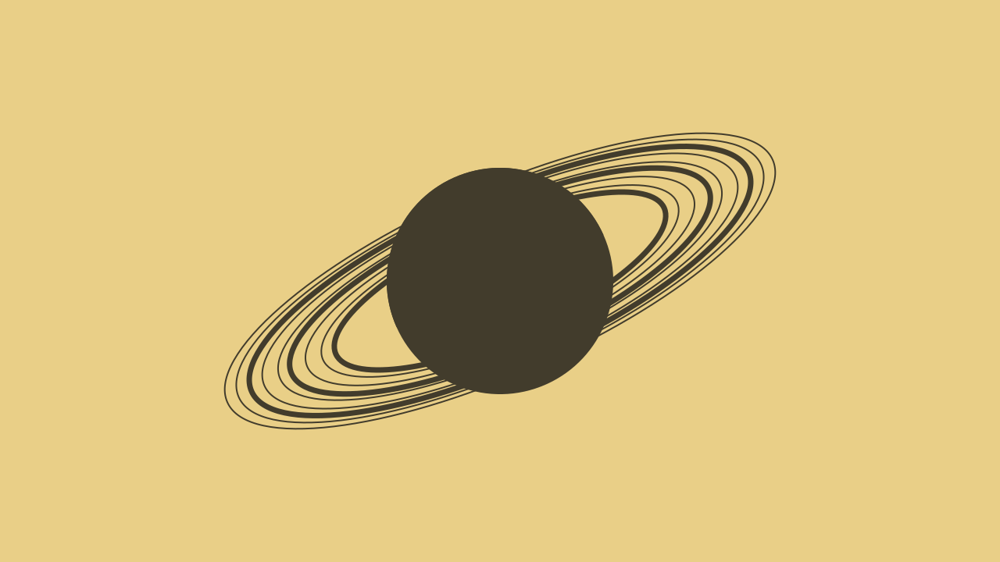
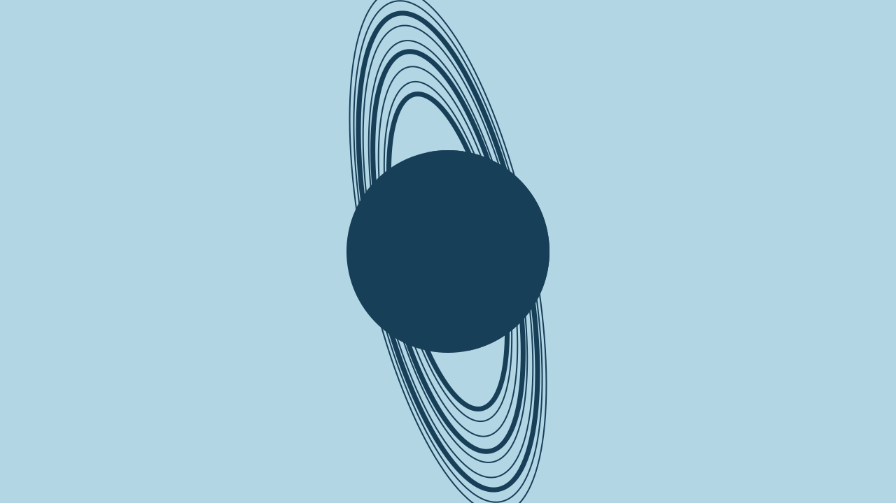
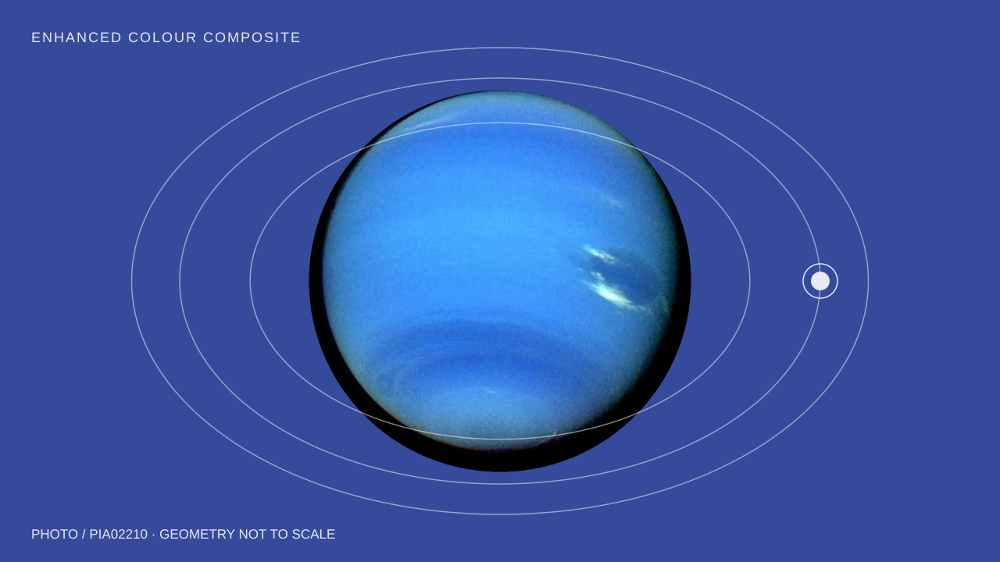

The swiftest circuit.
The smallest planet is also the fastest: Mercury completes an orbit in just 88 Earth days. Its path is distinctly elliptical.
NASA · Mercury factsA moving atlas of our
planetary neighbourhood.

Numbered by distance from the Sun. These are synthetic motion posters, not simulations: paths, sizes, colours and playback speeds are stylized.

The smallest planet is also the fastest: Mercury completes an orbit in just 88 Earth days. Its path is distinctly elliptical.
NASA · Mercury facts
Venus takes 225 Earth days to orbit the Sun, but 243 Earth days to rotate once. Its rotation runs opposite to Earth’s.
NASA · Venus facts
Earth completes one trip around the Sun in about 365.25 days. Its average distance from the Sun defines the familiar one-AU comparison.
NASA · Earth facts
A Martian year lasts 687 Earth days. Mars has seasons like Earth, but its elliptical orbit makes their lengths uneven.
NASA · Mars facts
Jupiter needs about 12 Earth years for one orbit. The largest planet is roughly 11 times wider than Earth, yet spins once in only 9.9 hours.
NASA · Jupiter facts
Saturn takes about 29.4 Earth years to circle the Sun. Its rings are made of countless pieces of ice and rock, each orbiting the planet.
NASA · Saturn facts
Uranus completes an orbit in about 84 Earth years. Its 97.77° axial tilt makes it appear to roll on its side as it travels around the Sun.
NASA · Uranus facts
Neptune takes about 165 Earth years to orbit the Sun. In 2011, it completed its first full orbit since its discovery in 1846.
NASA · Neptune factsPlanetary widths, with Earth as our reference. These circles use NASA’s rounded comparisons; spacing is not distance.
Mercury, Venus and Mars ratios are rounded from NASA’s cited dimensions; the giant-planet comparisons follow NASA’s rounded descriptions. Explore all NASA planet pages.
This project follows Claude Design + HyperFrames Pipeline by Ashok Sangireddy, from the AI Web Design Library.
Design → export → finish locally → render. Claude Design requires sign-in, so the design step was replaced with original static HTML/SVG compositions and a downloadable design ZIP. An AI coding agent then finished the project locally using HeyGen’s open-source HyperFrames.
The documentation describes an HTML-to-video framework. We used its paused GSAP timeline contract and local CLI to render nine eight-second MP4 motion pieces, then embedded those videos here. No paid services, account sign-ups or API keys were used.
All diagrams are original, synthetic geometry, not photographs or physically accurate simulations. Motion is decorative; all facts remain readable when it is off. NASA sources were checked on 9 November 2026. This is an independent project, not a NASA product.